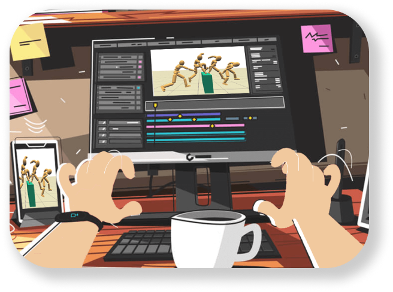

A Historical Perspective of the Art and Science of Animation

Navigating College Life: A Survival Guide for Freshmen
Powered by Miasco 2023


To the top

Embarking on your academic journey armed with these study hacks will not
only make your learning experience more efficient but also enjoyable.
Experiment with each technique, tailor them to your preferences, and
witness the positive impact on your academic success. Here's to
unlocking your full learning potential!
Regularly review and reflect on your study methods. Identify what works
best for you, make necessary adjustments, and embrace continuous
improvement for sustained academic success. This mindset fosters
self-awareness and adaptability, ensuring a dynamic and personalized
approach to learning.
10. Reflect and Review
Emphasizes the crucial link between physical well-being and effective
study sessions. Prioritize sufficient sleep, regular exercise, and a
balanced diet to rejuvenate the mind, promote mental alertness, and
ensure the energy needed for successful academic endeavors. Recognizing
the integral connection between a healthy body and a focused mind
contributes to an environment conducive to concentration and overall
academic achievement.
9. Healthy Body, Healthy Mind:
The Holistic Approach
Prevent study fatigue by avoiding prolonged sessions on the same
subject. Mix up your study topics to keep your brain engaged, preventing
monotony and fostering a more dynamic and comprehensive understanding
across different subjects.
8. Mix Up Subjects
Harness the power of technology to enhance efficiency, encourages
students to leverage technology for enhanced efficiency in their study
routine. Explore note-taking apps, flashcard platforms, and time
management tools to streamline your learning process and stay organized,
transforming your study experience into a more effective and
technologically supported endeavor.
7. Utilize Technology Wisely
Solidify your understanding by teaching concepts to others. Whether
explaining to a friend or an imaginary audience, articulating
information in your own words enhances comprehension and retention. This
interactive method not only deepens your grasp of the material but also
identifies gaps in understanding, offering a proactive and effective
approach to learning.
6. Teach to Learn
Prioritize understanding over memorization. Dive deep into concepts,
aiming for a profound comprehension rather than surface-level
memorization, leading to more meaningful learning.
5. Quality Over Quantity:
Understanding > Memorization
Encourages students to combat monotony by switching between different
study environments. This intentional change not only refreshes the mind
but also invigorates focus, fostering a more dynamic and effective
approach to study sessions.
4. Varied Study Spaces
"Mind Mapping Magic" introduces an effective strategy for tackling
complex concepts through visually engaging mind maps. By creating
interconnected diagrams, this technique enhances comprehension and
memorization, providing a structured and memorable approach to
understanding intricate subjects.
3. Mind Mapping Magic
Moving beyond passive reading, the active recall technique encourages
students to actively retrieve information through regular self-quizzing.
This approach enhances learning, solidifies understanding, and boosts
memory retention. By transforming the learning process into an engaging
and participatory experience, active recall ensures a deeper
comprehension of the material, offering a more effective alternative to
traditional passive reading habits.
2. Beyond Passive Reading
Immerse yourself in focused study sessions using the Pomodoro Technique.
Work diligently for 25 minutes, then reward yourself with a 5-minute
break. This cycle optimizes productivity and keeps your mind sharp.
The Pomodoro Technique is a focused study approach that emphasizes
25-minute work intervals, known as "Pomodoros," followed by 5-minute
breaks. This method optimizes productivity by preventing burnout and
keeping the mind sharp. By immersing oneself in concentrated work
punctuated by short breaks, students can cultivate discipline and
achieve efficient, rewarding study sessions.
1. Pomodoro Technique:
The Power of Intervals
Embarking on the thrilling journey of academia requires not just hard
work, but also strategic study techniques to navigate the challenging
seas of knowledge. Transform your learning experience with these ten
practical and innovative study hacks designed to enhance both efficiency
and enjoyment.
Top 10 Study Hacks to Elevate
Your Learning Experience
Flex
Blogs
Home
MIASCO